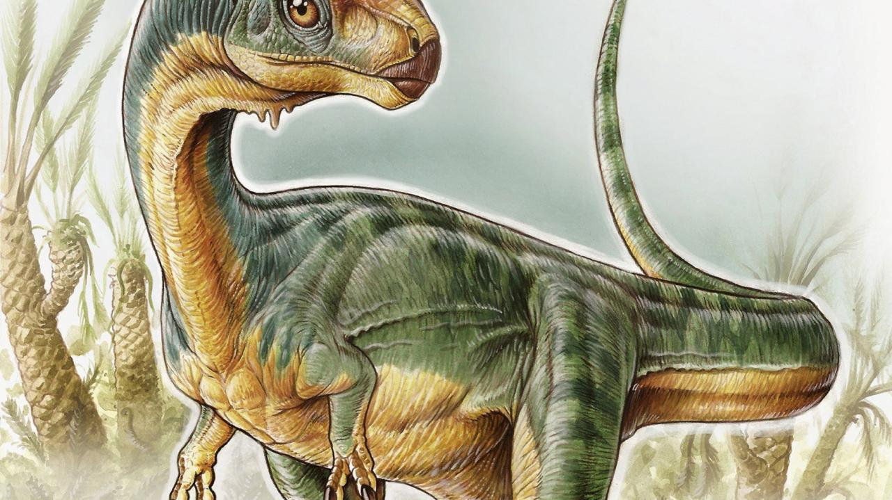

The Chilean Dinosaur
Chilesaurus
Chilesaurus diegosuarezi is the only known species of the extinct genus Chilesaurus of dinosaur that lived during the Late Jurassic, 150-146 million years ago in what is now South America.
Its fossils were discovered in the Aysén region, in Chile. At the time of its description, it was considered one of the few known herbivorous theropods outside of coelurosaurs.
It has an unusual combination of theropod, ornithischian, and sauropodomorph traits, so this genus has important implications for understanding dinosaur evolution, such as the traditional saurischian-ornithischian division or in support of the alternative proposal of the Ornithoscelida group.
According to fossils found in the Toqui Formation, Chilesaurus coexisted with other small theropods, basal crocodyliforms, and both diplodocid and titanosaur sauropod dinosaurs.

discovery
The first fossils of Chilesaurus, a vertebra and a rib, were discovered on February 4, 2004 in the commune of Aysén by the —at that time— seven-year-old boy Diego Suárez, who accompanied his parents, the geologists Manuel Suárez and Rita de la Cruz. New specimens were discovered in 2008, but they were thought to belong to several different dinosaur species.4 It was only later that they realized they belonged to the same species with a strange combination of traits. In 2015, the type species, Chilesaurus diegosuarezi, was named and described by the Argentine paleontologist Fernando Novas and his collaborators. The genus name does
reference to Chile and the specific name honors Diego Suárez.
The holotype, SNGM-1935, was found in a layer of the Toqui Formation, dating to the late Tithonian. It consists of a fairly complete and articulated skeleton of a juvenile individual, with the
skull, but lacking the feet and most of the tail. Paratypes have been established with other four partial skeletons (specimens SNGM-1937, SNGM-1936, SNGM-1938, SNGM-1888) and several individual bones (specimens SNGM-1889, SNGM-1895, SNGM -1901 SNGM-1894, SNGM-1898, SNGM-1900 and SNGM-1903), which represent juvenile and adult individuals.1In September 2017 the holotype was transferred from Sernageomin, and today It is housed in the National Museum of Natural History of Chile. Since November 2017, these fossil remains were exhibited for the first time to the public in the temporary exhibition of the MNHN "Dinosaurs, beyond extinction". In the exhibition the original fossil of Pelagornis chilensis was also shown. Other fragments of one of the fossilized skeletons of the Chilesaurus (humerus and nail phalanx of the thumb) can be seen in the regional permanent exhibition of the Regional Museum of Aysén in the city of Coyhaique.